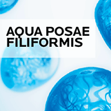
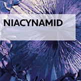
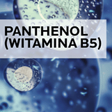
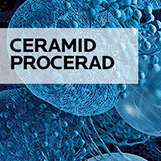
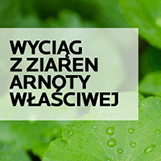
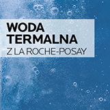

Kojąca
pielęgnacja
nawilżająca
effaclar h iso-biome krem
Odpowiedni dla skóry wrażliwej, skłonnej do trądziku,
uwrażliwionej wysuszającymi kuracjami przeciwtrądzikowymi.
Natychmiastowo
i intensywnie koi
Nawilża skórę przez 48h1
Regeneruje barierę ochronną skóry w 1H2
Widocznie zmniejszone niedoskonałości (-49%), zaskórniki (-16%) oraz przebarwienia3
Dzień po dniu zmniejsza zaczerwienienia i łuszczenie się skóry
bez alkoholu etylowego
gwarancja skuteczności
i wysokiej tolerancji
(Testowany na skórze tłustej, uwrażliwionej wysuszającymi kuracjami przeciwtrądzikowymi)
wg 87%
SKÓRA JEST
NATYCHMIASTOWO NAWILŻONA4
wg 78%
SKÓRA JEST
NATYCHMIASTOWO Ukojona4
wg 95%
zaczerwienienia są zredukowane5
wg 93%
przebarwienia są mniej widoczne5
wg 95%
skóra jest wzmocniona5
składniki aktywne

Unikalna prebiotyczna frakcja od La Roche-Posay,
pozyskiwana z biomasy, wzmacnia barierę ochronną skóry,
aby wspierać prawidłową funkcję mikrobiomu.

Znany z właściwości kojących, pomaga zmniejszać podrażnienia
i zaczerwienienia skóry.

Posiada właściwości kojące i regenerujące skórę.

Opatentowany składnik aktywny, pomaga zapobiegać
powstawaniu przebarwień po niedoskonałościach (czerwonych i brązowych).

Wspiera redukcję niedoskonałości chroniąc przed nadmiernym wysuszeniem skóry.

O właściwościach kojących, łagodzących i pomagających zmniejszyć reaktywność skóry.
Unikalna prebiotyczna frakcja od La Roche-Posay, pozyskiwana z biomasy, wzmacnia barierę ochronną skóry, aby wspierać prawidłową funkcję mikrobiomu.
Znany z właściwości kojących, pomaga zmniejszać podrażnienia i zaczerwienienia skóry.
Posiada właściwości kojące i regenerujące skórę.
Opatentowany składnik aktywny, pomaga zapobiegać powstawaniu przebarwień po niedoskonałościach (czerwonych i brązowych).
Wspiera redukcję niedoskonałości chroniąc przed nadmiernym wysuszeniem skóry.
O właściwościach kojących, łagodzących i pomagających zmniejszyć reaktywność skóry.
SPOSÓB UŻYCIA
1. Stosuj na oczyszczoną, suchą skórę twarzy,
codziennie rano i wieczorem.